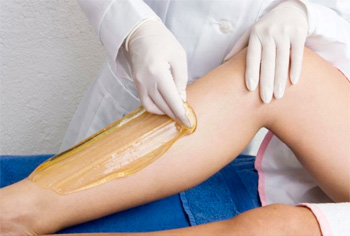

Kemiallisen ihonpuhdistuksen vaikutuksia:
Ääni on pitkittäistä, etenevää aaltoliikettä kaasuissa, nesteissä ja kiinteissä kappaleissa. Ultraäänen mekaanisen värähtelyn taajuus on suurempi kuin ihmiskorva kykenee kuulemaan. Tutkimustulokset osoittavat, että parhaat tulokset ihonhoidossa saavutetaan 28.000 Hz taa
- Juonteet, ilmerypyt ja arpikudokset pehmenevät ja siloittuvat
- Tehoaineet imeytyvät ihoon, energisoiden syvältä ihon toimintoja
- Kuollut ihosolukko ja ulkoiset epäpuhtaudet poistuvat iholta
Tämän aikana on suositeltavaa välttää muita tehokkaita kauneuskäsittelyjä. Kotikäytössä ampullit ovat tällöin parhaimmillaan.
Kolme erillistä hoito-ohjelmaa:
Ultraäänihoitoa suositellaan:
- Kasvoille: puhdistaa, kirkastaa, kiinteyttää, tasapainottaa talineritystä, vahvistaa
- Silmänympärysiholle: poistaa nestettä, tummuutta ja silottaa juonteita
- Decolletelle: avoin asu kruunataan hoidetulla decolletella, tulokset jo yhdellä käsittelyllä. Myös kaksoisleuan- ja käsienhoitoon
Paras hoitoteho saadaan sarjahoitona tehtäessä.
 Sokeri joka on MONOSAKKARIDIA, yksinkertaista hiilivetyä. Monet muut sokerit ovat disakkaridia. Vartalosokeroinnissa sokerin ja oikean tekniikan avulla saadaan ihokarvojen lisäksi poistettua hellävaraisesti myös kuollut ihosolukko. Tuloksena on terve, karvaton ja pehmeä iho.
Sokerointi sopii kaikenlaisille karvoille ja ihoille. Sokeri on 100 %:nen luonnontuote. Eikä sitä ole testattu eläimiin. Sokerilla voidaan poistaa hyvin lyhyttä, jopa alle 2 mm:n pituista karvaa. Sokeroinnissa karvat poistetaan karvan kasvusuuntaan, näin karvat eivät katkeile ja iho pysyy karvattomana pidempään. Monosakkaridi on molekyylikooltaan niin pieni, että se todella pystyy imeyttmään ihoon. Siksi Pandhy's sokerointi on nopeampaa, tehokkaanpaa ja kivuttomampaa. Oikella tekniikalla levitettäessä sokeri imeytyy syvälle karvatuppeen ja poistaa karvatupessa kasvavia, vielä näkymättömiä karvan alkuja. Sokeroinnin avulla saadaan vähennettyä ja heikennettyä karvoitusta Huomioitavaa: Ihoa ei saa kuoria päivää ennen sokerointihoitoa, hoitopäivänä eikä hoitoa seuraavana päivänä.
Hoidon jälkeen:
Vältä saunaa ja urheilua (hikoilua) 12 tuntia. Jos sinulta on poistettu kainalokarvat, vältä deodorantin käyttöä 12 tuntia. Jos sinulta on poistettu kasvokarvoja, vaältä tukkivia meikkiaineita 12 tuntia. Muista suojata iho auringolta seuraavana päivänä. Muista kosteuttaa ja kuoria ihoasi säännöllisesti, näin estät sen kuivumisen.
Yliherkän atooppisen ja herkästi reagoivan ihon hoitolinja kaikenikäisille, naisille ja miehille. Erittäin herkät rasvaköyhät ihot, joissa ihonpinta on tavallista kuivempi, ovat alttiina punoitukselle, kuivuudelle, hilseilylle ja erittäin epämiellyttävälle kutinalle. Tällaisilta ihoilta vesi haihtuu huomattavasti helpommin ja etenkin erilaisilla ärsyttävillä aineosilla on suuremmat mahdollisuudet läpäistä iho. Gerard ́sin laboratorioiden tekemät erittäin edistykselliset tutkimukset ovat tuottaneet tuloksena näille ihoille erikoistuotelinjan päivittäiseen ihonhoitoon, johon kuuluvat puhdistusaineet, elvyttävät, korjaavat ja suojaavat voiteet kasvoille ja keholle erikoisnaamioneen, joilla pystytään saamaan parhaat mahdolliset hoitotulokset. Tuotteiden luotettavuus ja tehokkuus voidaan todeta jo erittäin lyhyen, mutta säännöllisen käyttöajan jälkeen. On tärkeää, että kaikkia näitä tuotteita käytetään yhdessä ja vältetään muiden sarjojen tuotteiden käyttöä.
Pintapuhdistus, kuorinta, höyrytys, suklaavoide+lämmitetty manteliöljy hieronta, naamio, ampulli ja hoitovoide. Pehmentävä ja kosteuttava.
Kokonaisvaltainen hoito, jalkakylpy, kovettumat poistetaan (känsät/syylät)kynnet leikataan (poraus) ja kynsinauhat siistitään, desinfiointi (lakkaus/geelaus) hieronta ja hieronnan kruunaa Gerard'sin jalkageeli.